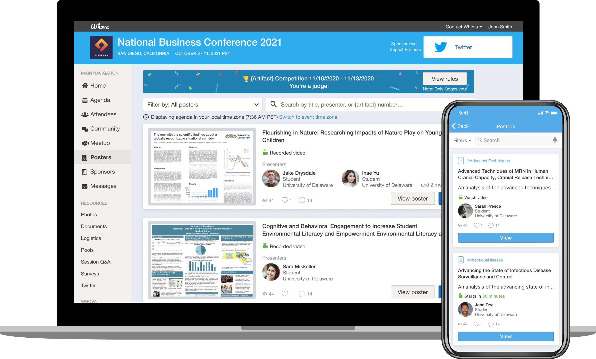

Project Background
The demand for virtual events grew exponentially over the last couple years due to quarantine. Event organizers needed a dedicated online feature that would help ease the planning and the presenting of small scaled presentations. Organizing an event can be an overwhelming process involving the collection of projects and materials, communicating with the presenters and attendees, and now preparing all the correct Zoom links and invitations.

Project Outcome
To better support the organizers, the Artifact Center feature allows simple planning and showcasing of all types of small scaled presentations online. Organizers can manage presenters, projects, documents, video, livestream links, and more all in one space, and presenters have the ability to upload their own material, saving time and energy for all parties.